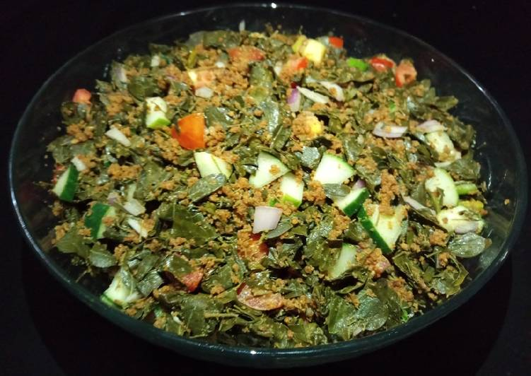

Kwadon Zogale

Zogale is a popular salad recipe in northern Nigeria
Zogale is a salad made from moringa leaves and kuli-kuli
Ingredients:
- Moringa
- Fresh tomatoes
- onion
- 2 tbsp of oil
- kuli-kuli as required
Steps:
- Remove moringa leave from the stems and wash thouroughly, steam in a pot for 20-25mins until well cooked
- Then cut all the veggies finely, and transfer the steamed moringa into a large bowl, add the veggies, oil, cube seasoning and lots of kuli kuli, mix well and serve